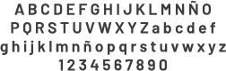

-Barlow Medium:
-Barlow Semi-bold:
• Paleta cromática:
Estos fueron elegidos en base a la página web previamente desarrollada. Estos constan de colores desaturados, fríos y cálidos. Esta elección esta inspirada en el personaje Bo Peep, y su tierna vestimenta.
• Impresión de pantalla
Hacé clíc para ampliar cada imagen.
• Impresión de pantalla
Hacé clíc para ampliar cada imagen.
{kind=link}
{kind=link}
{kind=link}
FUNDAMENTACIÓN Y VISIBILIDAD
• Tipografías
Para el título principal "¡Ganate un set de hilo!, se utilizó la tipografía Dancing Script, para conformar un sistema ya que también es utilizada en el sitio web. Por por su tamaño es completamente legible y llama la atención.
Para el resto de los textos (Texto secundario, formulario y footer) se utilizó Barlow en algunas de sus variables (Regular, Medium y Semi Bold) y en diferentes tamaños para proporcionar jerarquía a cada uno de los elementos. Fue elegida, por su excelente legilibilidad y comprensión para el usuario.
- Dancing Script:

-Barlow Regular:


Para el resto de los textos (Texto secundario, formulario y footer) se utilizó Barlow en algunas de sus variables (Regular, Medium y Semi Bold) y en diferentes tamaños para proporcionar jerarquía a cada uno de los elementos. Fue elegida, por su excelente legilibilidad y comprensión para el usuario.
- Dancing Script:
-Barlow Regular:
-Barlow Medium:
-Barlow Semi-bold:
